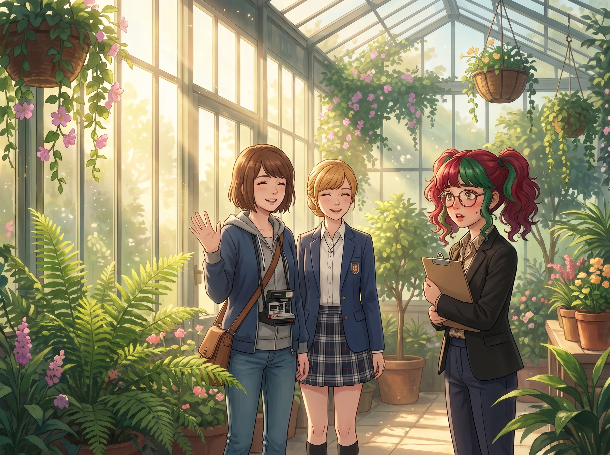

愛與和平的升級（倒敘）

二號車廂的光明陣營決定發起最後的搶救行動。
看著實習生 Lily 熟練地用道德綁架勒索了 Chloe，又用降維打擊逼迫 Victoria 簽下加薪協議，Max 和 Kate 陷入了深深的恐慌。她們意識到，如果再不進行干預，這個曾經連大聲說話都會發抖的女孩，很快就會成為統治波特蘭地下世界與藝術圈的雙料教父。
於是，在一個陽光明媚的週六上午，Max 和 Kate 將 Lily 叫到了充滿綠意與和平氣息的溫室裡，準備進行一場名為愛與和平的靈魂淨化的非正式會談。
一、佈置完美的感化結界
為確保搶救成功，Kate 拿出了最高規格的裝備：剛出爐的、散發著濃郁香氣的肉桂捲，以及一套精緻的碎花骨瓷茶具。Max 甚至在背景播放了頻率療癒系白噪音，試圖用物理與精神的雙重魔法洗滌 Lily 沾染的世俗毒素。
「Lily，坐。」Max 指了指藤椅，語氣溫和得像個心理醫生。
「學姐們，有什麼吩咐嗎？」Lily 乖巧地坐下，雙手放在膝蓋上，甚至特意把那本黑色的《生存指南》藏在了制服口袋的最深處，換上了一本畫著小兔子的粉色筆記本。
Kate 溫柔地給她倒了一杯茶，眼神中充滿了聖母般的慈愛與擔憂：「Lily，我和 Max 最近注意到……妳的溝通方式發生了一些改變。我們很欣慰妳變得自信了，但是真正的力量，應該建立在寬容與理解之上，而不是建立在抓住別人的把柄，或者利用別人的弱點上。妳明白嗎？」
Max 在一旁認真地點頭附和：「沒錯。暴力和威脅或許能解決一時的問題，但最終會吞噬妳的靈魂。我們希望妳能找回當初那個純粹、善良的自己。」
Lily 聽得非常認真。她的大眼睛裡閃爍著感動的光芒，甚至拿起粉色筆記本，極其虔誠地記下了「真正的力量 = 寬容與理解」。
「我明白了，Kate 學姐，Max 學姐。」Lily 抬起頭，笑容純潔無瑕，「我以後一定會用愛與和平的方式去解決問題，絕對不再用 Price 學姐的物理威脅和 Victoria 學姐的階級嘲諷了。」
看著這隻迷途知返的小白兔，Max 和 Kate 長長地舒了一口氣，感覺世界再次充滿了光明。
二、突發狀況與愛與和平的實踐
就在這個溫馨的時刻，溫室桌上的公用電話響了。
Max 接起電話，臉色瞬間沉了下來。打來的是工坊底片與畫框的長期供應商，一個出了名難纏且唯利是圖的中年男人。
「什麼叫原材料上漲，這批貨必須臨時加價百分之三十？」Max 皺起眉頭，不擅長吵架的她語氣開始變得無力，「但我們上個月已經簽了這季度的合約了……如果不加價就斷貨？可是我們的冬展下週就要用了……」
對方在電話裡態度極其囂張，吃準了這幾個年輕女孩不敢把事情鬧大，甚至開始用粗話施壓。
Max 求助般地看向 Kate。Kate 皺著眉頭，正準備接過電話用溫和堅定的語氣講道理時，一隻白皙的手輕輕按住了話筒。
「Max 學姐，讓我來吧。」Lily 站了起來，眼神清澈，笑容甜美，「您剛才教我的，我要用寬容與理解去感化他。」
Max 愣了一下，鬼使神差地把電話遞了過去。
三、究極進化：天使外皮下的撒旦低語
Lily 雙手捧著話筒，深吸了一口氣，聲音瞬間切換到了 Kate Marsh 的專屬頻道——溫柔、甜美、甚至帶著一絲心疼的顫音。
「您好，王老闆。我是畫廊的實習生 Lily。」Lily 的語氣彷彿在安慰一個生病的幼童，「我剛才聽到了您的訴求。我完全理解您在目前的經濟環境下，面臨著巨大的現金流壓力。原材料上漲確實是一件令人焦慮的事情，您一定好幾個晚上都沒睡好了吧？這對您的肝臟負擔太大了。」
電話那頭的供應商愣住了。他準備好了一肚子髒話，卻被這突如其來的神聖關懷打了個措手不及，下意識地順著說：「呃……是啊，最近生意不好做……」
「我非常寬容您的這種毀約衝動，因為人在絕境中總是容易做出一些喪失理智的決定。」Lily 依然保持著天使般的微笑，但粉色筆記本下方的左手，卻無意識地做出了一個 Victoria 標誌性的十五度鄙視手勢。
「不過，」Lily 的聲音依舊溫柔得能滴出水，但內容卻發生了恐怖的變異，「出於對您健康的擔憂，我剛才已經幫您查閱了波特蘭商業法典第十四條的違約條款。如果我們現在將您的臨時加價錄音，並連同合約副本發送給行業協會與您的競爭對手……您不僅要面臨高達合約金額三倍的違約金，您的公司信譽也會在二十四小時內徹底破產。」
電話那頭陷入了死寂。
「但請您放心，我們是一家充滿了愛與和平的畫廊。」Lily 歪著頭，用最甜美的聲音祭出了最後的絕殺：「我們不會那麼殘忍的。我們只會把原本要給您的訂單，以九折的價格交給街對面的李老闆。而且我聽說，李老闆最近剛換了一輛新跑車，您卻還在開那輛漏油的二手福特，這階級差距真是讓人看了都覺得心酸呢。願上帝保佑您的公司不會在下個月倒閉。祝您有個美好的一天哦。」
「等等！不加了！按原價！不，我給你們打九五折！別找老李！」電話裡傳來供應商崩潰的尖叫聲。
「哇，您真是一位慷慨又善良的長輩。感謝您的理解。」Lily 輕輕扣上電話。
四、放棄治療
溫室裡安靜得只能聽到白噪音的流水聲。
Lily 轉過身，像個等待誇獎的小學生一樣看著 Max 和 Kate，臉上的笑容純潔得沒有一絲雜質：「Max 學姐，Kate 學姐，妳們看！我剛才完全沒有用物理威脅，也沒有大吼大叫。我只是充分表達了對他破產的理解，以及對他開破車的寬容。愛與和平真的太好用了！」
Max 的嘴角劇烈地抽搐了兩下。她低頭看了一眼手裡那份原本寫滿了「如何引導實習生向善」的搶救計畫表，然後默默地將它揉成一團，精準地投進了桌下的垃圾桶。
Kate 則是雙手捂著臉，深深地吸了一口氣，肩膀微微顫抖著，不知道是在嘆息還是在憋笑。
最終，小天使抬起頭，將那盤剛出爐的、原本用來當作心靈雞湯道具的肉桂捲，整盤推到了 Lily 面前。
「吃吧，Lily，多吃點。」Kate 的語氣裡透著一種徹底看破紅塵的超脫與放棄，「吃飽一點。畢竟妳以後還要負責對付畫廊的稅務局和衛生檢查員，體力消耗會很大的。」
Max 也端起茶杯，絕望地碰了碰 Kate 的杯子：「乾杯，Kate。我們不僅沒能拯救她，我們還把她升級成了 2.0 版本的終極究極體。阿卡迪亞灣的詛咒，終於在波特蘭完成了它的最終閉環。」
這一天，二號車廂的光明陣營正式宣佈：放棄治療。因為這個自帶聖母塗裝的重火力人形兵器，真的該死的太好用了。
故事的時間點，實際發生在第二季波特蘭工坊時期